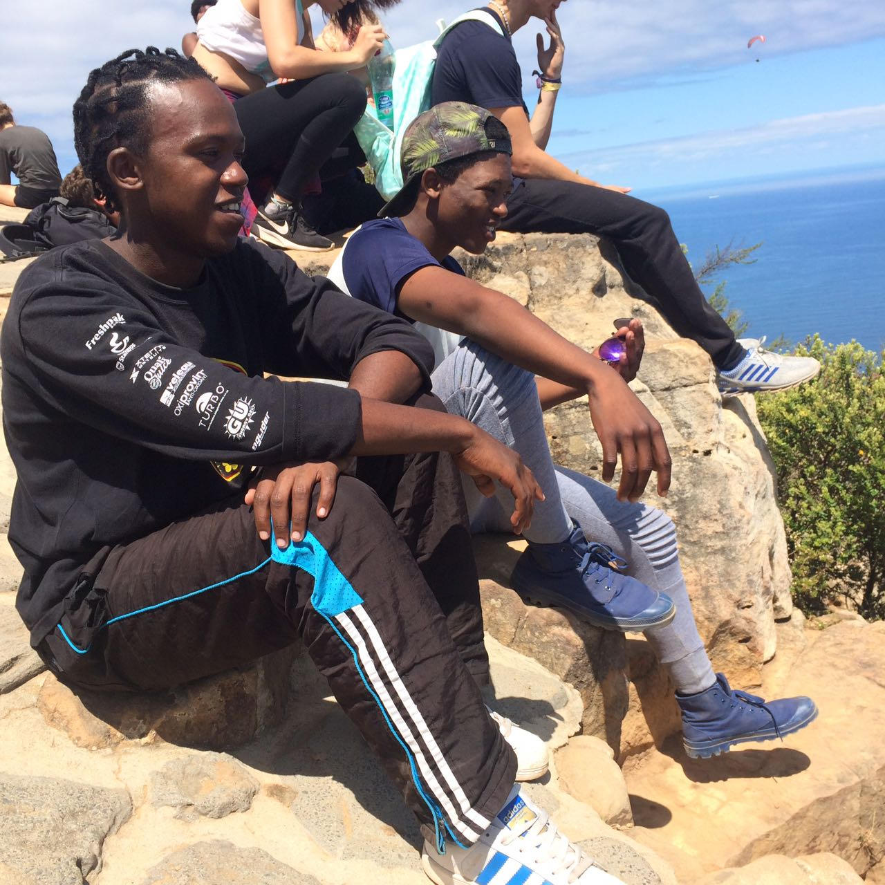

Luvuyo Sono
CodeX-er 2018

The Philippines, Thailand
A city I would love to visit one day
The entire landmass of the Philippines is made up islands, making it the second-largest archipelago in the world.
Some of the reasons why I love the Philippines:
- Good weather all year-round
- I'd love to explore the beautiful aqua species they have there
- I'd love to taste their top rated street food
- It is said to have the most friendly people in the world
- I would also love to see a volcano mountain. There a re many in the philippines
Language I would love to learn?
Portuguese. I have neighbours that speak the language, so I would have people to practice with.
| English | Portuguese |
|---|---|
| Hello, World | Olá Mundo |
| I love programming | Eu amo programação |
Historic Places
Interesting historic places in Cape Town

Church Square, Cape Town
Church Square is one of the three early areas of land about which the early town developed and its boundaries probably began to be defined in 1679 when the first public building, a slave lodge, today known as the Old Supreme Court, was built on its southern side.
City Hall, Cape Town
This is a large Edwardian building in the centre of Cape Town city. It was built in 1905, on the Grand parade, west of the Castle of Good Hope. Messrs Henry Austin Reid and Frederick George designed this building and is home to the Cape Philharmonic Orchestra.
District Six Museum
District Six was named the Sixth Municipal District of Cape Town in 1867. Originally established as a mixed community of freed slaves, merchants, artisans, labourers and immigrants, District Six was a vibrant centre with close links to the city and the port.